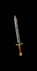
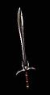
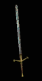
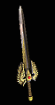
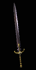

血书
罗马短剑
|
单手伤害: 31 - 97 (64 平均)
须要等级: 30
须要力量: 25
耐久度: 54
基础武器伤害: [0]
+140% 增强伤害
+12-45 伤害
+90 准确率
20% 提升攻击速度
10% 减缓耐力消耗
8% 击中偷取生命
+1-3 旋风 (限野蛮人使用) (可变)
+2-4 支配长剑 (限野蛮人使用) (可变)
(限 1.09 及以后版本) |
冰刚之眼
微弯剑 |
单手伤害: (24-28) - (63-73) (43.5-50.5 平均)
须要等级: 31
须要力量: 25
须要敏捷: 52
耐久度: 72
基础武器伤害: [-30]
+200-250% 增强伤害 (可变)
50% 致命攻击
20% 提升攻击速度
6% 击中偷取法力
使目标减慢 30%
击中使目标目盲
(限 1.09 及以后版本) |
六角之火
虚伪之刃 |
单手伤害: (59-61) - (97-102) (78-81.5 平均)
须要等级: 33
须要力量: 58
须要敏捷: 58
耐久度: 32
基础武器伤害: [-10]
+140-160% 增强伤害 (可变)
+35-40 伤害
+3 火焰技能
等级 6 九头海蛇 (36 次)
无视目标防御
抗火 +25%
10% 抗火上限
(限 1.09 及以后版本) |
阿里巴巴之刃
圆月弯刀 |
单手伤害: (25-35) - (56-77) (40.5-56 平均)
须要等级: 35
须要力量: 70
须要敏捷: 42
耐久度: 32
基础武器伤害: [20]
+60-120% 增强伤害 (可变)
+(2.5 每角色等级) 2-247% 额外金币从怪物身上取得 (以角色等级决定)
+(1 每角色等级) 1-99 % 更佳的机会取得魔法装备 (以角色等级决定)
+15 法力
+5-15 敏捷 (可变)
凹槽 (2)
(限 1.09 及以后版本) |
金瑟的裂缝
空间之刃 |
单手伤害: (26-32) - (70-87) (48-59.5 平均)
须要等级: 37
须要力量: 85
须要敏捷: 60
耐久度: 60
基础武器伤害: [0]
+100-150% 增强伤害 (可变)
+50-120 魔法伤害
30% 提升攻击速度
法术伤害减少 7-12 (可变)
回复装备耐久度 1 于 5 秒内
(限 1.09 及以后版本) |
击头者
战斗剑 |
单手伤害: 40 - (86-184) (63-112 平均)
须要等级: 39
须要力量: 92
须要敏捷: 43
耐久度: 32
基础武器伤害: [0]
150% 增强伤害
+(1 每角色等级) 1-99 - 最大伤害 (以角色等级决定)
+(1.5 每角色等级) 1-148% 致命攻击 (以角色等级决定)
防止怪物自疗
+15 力量
(限 1.09 及以后版本) |
疫病带原者
符文剑
|
单手伤害: 35 - 150 (92.5 平均)
须要等级: 41
须要力量: 103
须要敏捷: 79
耐久度: 44
基础武器伤害: [-10]
150% 增强伤害
+10-45 伤害
+300 毒素伤害, 持续时间 8 秒
打击时有 5% 几率施展等级 4 剧毒新星
抗毒 +45%
+5 狂犬病 (限德鲁依使用)
(限 1.09 及以后版本) |
亚特拉斯
古代之剑 |
单手伤害: (54-63) - (129-150) (91.5-106.5 平均)
须要等级: 42
须要力量: 127
须要敏捷: 88
耐久度: 144
基础武器伤害: [0]
+200-250% 增强伤害 (可变)
+2 圣骑士技能
50% 额外的攻击准确率加成
+75 防御
+8 体力
+12 敏捷
+16 力量
(限 1.09 及以后版本) |

克林�F.弗姆
斩铁剑 |
单手伤害: (20-24) - (67-78) (43.5-51 平均)
双手伤害: (46-54) - (104-120) (75-87 平均)
须要等级: 42
须要力量: 73
须要敏捷: 61
耐久度: 44
基础武器伤害: [0]
+160-200% 增强伤害 (可变)
50% 提升攻击速率
使目标减慢 35%
-70 每次击中降低怪物防御
20% 高速跑步/行走
伤害减少 10%
(限 1.09 及以后版本) |

兵之王
双刃镰 |
单手伤害: (29-33) - (69-78) (49-55.5 平均)
双手伤害: (59-67) - (140-158) (99.5-112.5 平均)
须要等级: 43
须要力量: 64
须要敏捷: 14
耐久度: 50
基础武器伤害: [10]
+130-160% 增强伤害 (可变)
+50-140 冰冷伤害, 3 秒持续时间
打击时有 5% 几率施展等级 3 冰封球
冰冻目标 +2
需求 -30%
+20 力量
(限 1.09 及以后版本) |

卑劣躯壳
长牙剑 |
单手伤害: (25-30) - (92-111) (58.5-70.5 平均)
双手伤害: (47-57) - (145-174) (96-115.5 平均)
须要等级: 44
须要力量: 104
须要敏捷: 71
耐久度: 50
基础武器伤害: [0]
+150-200% 增强伤害 (可变)
+(7.5 每角色等级) 7-742% 对不死生物的伤害 (以角色等级决定)
+(10 每角色等级) 10-990 对不死生物的准确率 (以角色等级决定)
+250 毒素伤害, 持续时间 6 秒
打击时有 6% 几率施展等级 1 伤害加深
抗毒 +50%
(限 1.09 及以后版本) |

云裂
哥德剑 |
单手伤害: (35-42) - (100-120) (67.5-81 平均)
双手伤害: (97-117) - (150-180) (123.5-148.5 平均)
须要等级: 45
须要力量: 113
须要敏捷: 20
耐久度: 40
基础武器伤害: [10]
+150-200% 增强伤害 (可变)
打击时有 6% 几率施展等级 7 天堂之拳
+1-240 闪电伤害
10% 抗闪电上限
+30 防御
攻击者受到闪电伤害 15
+2 防御灵气技能 (限圣骑士使用)
+2 进攻灵气技能 (限圣骑士使用)
+2 照亮范围
(限 1.09 及以后版本) |
特迪斯法雷.芙法米
韩瑞德之剑 |
单手伤害: (41-49) - (77-91) (59-70 平均)
双手伤害: (63-75) - (118-140) (90.5-107.5 平均)
耐久度: 50
须要等级: 46
须要力量: 125
须要敏捷: 94
基础武器伤害: [-10]
+120-160% 增强伤害 (可变)
+50-200 火焰伤害
攻击时有 10% 几率施展等级 6 火球
等级 10 火墙 (20 次)
等级 10 强化 (45 次)
+10 火焰吸收
抗火 +40%
(限 1.09 及以后版本) |
剑卫
死刑之剑 |
单手伤害: (64-67) - (108-112) (86-89.5 平均)
双手伤害: (126-131) - (216-224) (171-177.5 平均)
须要等级: 48
须要力量: 85
须要敏捷: 55
耐久度: 50
基础武器伤害: [10]
+170-180% 增强伤害 (可变)
+(5 每角色等级) 5-495 防御 (以角色等级决定)
30% 受损的生命移至法力
需求 -50%
所有抗性 +10-20 (可变)
20% 快速再度攻击
20% 增加格挡可能性
+100 对飞射性防御
+200 对近战的防御
(限 1.09 及以后版本) |